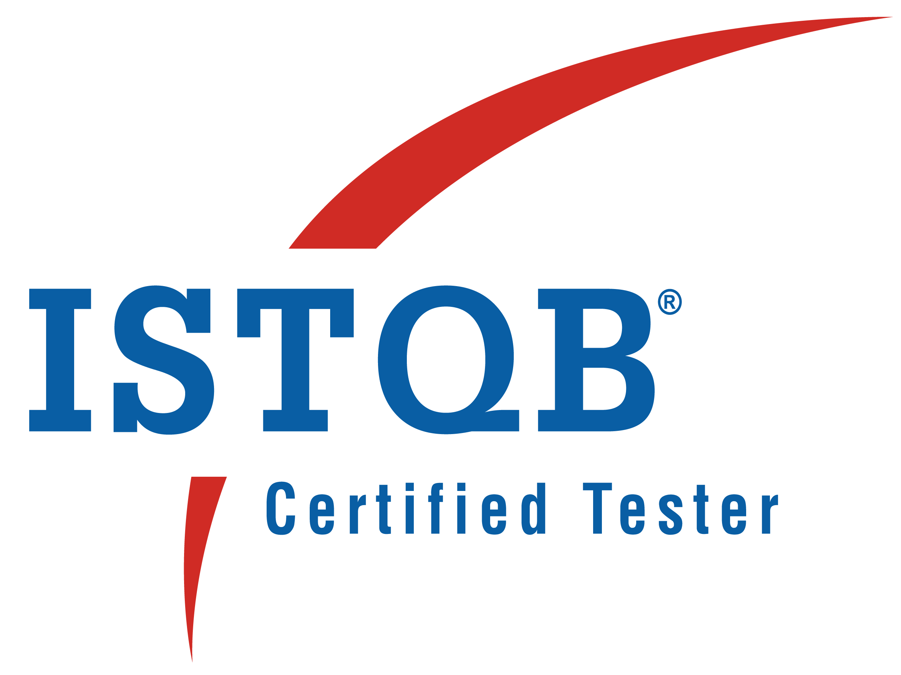

Raman PasalaSDET, Test Automation Engineer |
 |
|
SUMMARY:
9+ years of experience as Quality Assurance Engineer in testing Web [client server & Enterprise level web] and mobile [native & web] applications with strong skills in bringing automation culture. Highly capable and experienced in providing Strategic directions for Testing Automation Practices. Designing, and Developing Enterprise wide, reusable testing productivity components and frameworks being the speciality.
CERTIFACTIONS:
- PSM-1 Certified (Professional scrum master -1)
- Microsoft Azure Fundamentals certified
- ISTQB certified
- Tricentics Tosca –Automation specialist Level 1 Certified
SKILLS:
| Web Automation | ⭐⭐⭐⭐⭐ |
| API Automation | ⭐⭐⭐⭐⭐ |
| Mobile Automation | ⭐⭐⭐⭐ |
| Azure DevOps | ⭐⭐⭐⭐ |
| Web Development | ⭐⭐⭐ |
TECHNICAL SKILL SET:
| Automation Tools/APIs: | Selenium WebDriver, Serenity BDD, TestNG, Junit, Cucumber, Specflow, Webdriver IO, Browser stack, Sauce Labs ,Tricentis Tosca, Appium |
| WebService Automation Tools: | REST Assured, Spring Test Framework, Ready API, SoapUI, Postman |
| Programming Languages: | C++, Java, J2EE, C#, JavaScript, HTML, XML, CSS, JQuery, React.js |
| Frameworks: | WData Driven, BDD, TDD, Hybrid, Spring Boot 2.2 |
| Build Management Tools: | Maven |
| IDE: | Eclipse, Intelij, Visual Studio, VC Code, Sublime Text |
| CI/CD Tools: | Jenkins, TeamCity, Azure DevOps and XL release, Ansible |
| Version Control: | Git, SVN, Bit bucket, Azure Repos |
| Req Management Tools: | Quality Centre (ALM), JIRA, Azure Boards, Zephyr |
| Project Methodologies: | SDLC, Agile Scrum, Waterfall |
| Cloud: | AWS, Azure, PCF |
| API Monitoring Tools: | Splunk, Grafana |
| Database/ Database Tools: | Oracle, SQL server, PLSQL, MongoDB |
Contact Details |
My Git Hub |